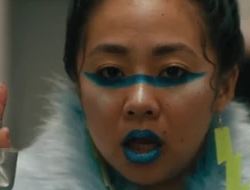

CalTV E: Swiss Army Man Interview with Daniel Scheinert and Daniel Kwan
Their Background
Filmmakers Daniel Kwan and Daniel Scheinert, collectively known as Daniels, met while studying at Emerson College in Boston and began collaborating on various projects. Their breakthrough came with their short film Interesting Ball (2008), which gained viral attention online. It showcased their quirky humor and distinctive visual style, setting the tone for their future work.
Their unique approach to filmmaking has earned them a dedicated fanbase and critical acclaim within the industry, solidifying their reputation as innovative and boundary-pushing directors.
Their Movie
Everything Everywhere All at Once - the movie
Worthy of Your Time and Dime
In the past, spending money to go to the dollar show to see movies that were released much earlier in the year was worth it. With the obselence of the dollar show plus the rising costs of movie tickets and refreshments, a small fortune is now required to take the family to see a film at the neigborhood movie theater. Few movies are worth the expense, but Everything Everywhere All At Once was so non-conventional that it was widely considered worthy of the splurge. It was a spectacular display of physics, mathematics, and art. Sharing about this movie, is me sharing about subjects that interest me.
Physics
A representation of a multiverse
Depiction of a Multiverse
Physicists Max Tegmark and Brian Greene have proposed different classification schemes for multiverses and universes. Tegmark's four-level classification consists of Level I: an extension of our universe, Level II: universes with different physical constants, Level III: many-worlds interpretation of quantum mechanics, and Level IV: ultimate ensemble. Brian Greene's nine types of multiverses include quilted, inflationary, brane, cyclic, landscape, quantum, holographic, simulated, and ultimate. The ideas explore various dimensions of space, physical laws, and mathematical structures to explain the existence and interactions of multiple universes. Some other multiverse concepts include twin-world models, cyclic theories, M-theory, and black-hole cosmology.
Mathematics
Several mathematical equations
Infinite Possibilities
The subject of infinity and infinite universes, known as the multiverse, was presented in an intense yet whimsical way. Expressing the concept of infinity entertainment injects excitement into the subject matter, triggering an interest in a wider audience.
The multi-step process for multiverse jumping (also known as verse jumping) introduces the concept of algorithms. Algorithms are used in solving problems in mathematics and logic.
The use of charts in quantifying levels of skill for each version of a character involves presenting numbers in a graphical way.
Art
Shirley Kurata sitting in front of a laptop computer - "Homeward Bound with Shirley Kurata", https://www.youtube.com/watch?v=8OCkK2tmndY
Cosmic Costume Creator
Born in 1970 in Los Angeles, Shirley Kurata grew up in the San Gabriel Valley, the youngest of four children. Her parents owned a laundromat. She is a Japanese-American wardrobe stylist and costume designer based in Los Angeles, California. In 2023, she was nominated for the Academy Award for Best Costume Design, for her work on the absurdist comedy-drama indie film Everything Everywhere All at Once.
For Everything Everywhere All at Once, Kurata designed multiple looks for actors including Michelle Yeoh, Ke Huy Quan,Stephanie Hsu, and Jamie Lee Curtis, as their characters traveled from the main universe to other parts of the multiverse. For the film, Kurata was tasked with designing an extremely large number of costumes on a limited budget. Kurata has said that co-directors Daniel Kwan and Daniel Scheinert encouraged her to Just go crazy, get creative, and that they aimed to create costumes that viewers would wear on Halloween.
Jobu Topaki playfully wearing a furry jacket with silver gloves - https://villains.fandom.com/wiki/Jobu
_Tupaki/Gallery
Creative Inspirations
According to The Hollywood Reporter, Kurata subverted and reclaimed Asian-centric tropes in styling the outrageously outfitted personas of Hsu's character, villain Jobu Tupaki, to whom Kurata has said she relates. Jobu Tupaki's many looks in the film include Golfer Jobu who wears a pink argyle vest and socks, exemplifying the perfect Asian daughter who excels at sports and everything else in her life according to Kurata. Elvis Jobu, on the other hand, wearing an Elvis costume with pink hair and a cigarette, signals that she is antagonizing her mother. Another is Goth Jobu, who wears an all-black and a vinyl A-line miniskirt over a sheer tulle petticoat, which The Hollywood Reporter notes is a twist on anime cosplay's Victorian doll-inspired Elegant Gothic Lolita. Yet another look is Jobu K-Pop Star, influenced by K-pop and Harajuku street style.
A troubled Jobu Topaki wearing a colorful hoodie with teddy bears attached to shoulders - https://villains.fandom.com/wiki/Jobu
_Tupaki/Gallery
Meteoric Impact on the Movie
CBS News said the film's gravitas would not have been possible without the creative vision behind the film's amazing (and often universe-defying) costumes - Shirley Kurata. Insider observed that the film's costumes were more than just clothes, since they convey different iterations of each character and [place] the viewer in the numerous multiverses traversed throughout the film. Kurata's mind-bending vision for Hsu's costumes sets a new precendence, giving other artists like her the opportunity to "push the envelope" even in for movies in mainstream cinema.
Me
A representation of me typing on a laptop computer
My Reasons for Taking This Course
This class is answering questions of mine about:
How to best arrange things on a web page in aesthetically pleasing manner
The requirements for building an accessible web page
Finding and understanding the code of web pages
Instilling proper structure, style, and functionality to a web page
How to begin using ChatGPT
This course assists in expanding my knowledge and skill set in the world of IT.